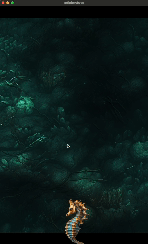

I'm on the second day of porting InfiniteAbyss to Defold from Unity. I've decided to start a Devlog to keep track of my progress and to share my experiences doing so. So far, I've been able to get the player to swim up and down and face left and right.
We have a player script that handles input and movement. I've added a few variables to the script to control the speed, gravity, and swim height. I've also added a variable to keep track of the current height of the player.
-- player.script
local speed = 280 -- Adjust the speed as needed
local gravity = -90 -- Adjust the gravity as needed
local swimHeight = 125 -- The max height one touch can swim up
function init(self)
msg.post(".", "acquire_input_focus") -- Acquire input focus for the script
self.currentHeight = 0 -- Initialize the current height
end
Since I'm targetting mobile devices, I'm using the touch input to control the player. I've added a flag to the script to keep track of when the screen is touched. I've also added a variable to keep track of the initial touch position. This will be used to determine which direction the player is facing.
function on_input(self, action_id, action)
if action_id == hash("touch") then
if action.pressed then
-- When the screen is touched, set a flag to move the player up
self.is_touched = true
-- Save the initial touch position for comparison
self.touchStartPosition = action.x
-- Flip the sprite horizontal based on touch
local bee_position = go.get_position()
if action.x < bee_position.x then
sprite.set_hflip("#sprite", true)
else
sprite.set_hflip("#sprite", false)
end
elseif action.released then
-- When the touch is released, set the flag to false and reset current height
self.is_touched = false
self.currentHeight = 0
self.touchStartPosition = nil
end
end
end
Finally, I've added the update function to move the player up and down. I'm using the current height to determine when to stop moving the player up. I'm also using the touch flag to determine when to move the player up. I'm using the touchStartPosition to determine which direction the player is facing.
function update(self, dt)
-- Apply gravity continuously to make the player sink when not touched
go.set_position(vmath.vector3(go.get_position().x, go.get_position().y + gravity * dt, 0))
-- Move the player up if the touch flag is true and the current height is below swimHeight
if self.is_touched and self.currentHeight < swimHeight then
local deltaY = math.min(speed * dt, swimHeight - self.currentHeight)
go.set_position(vmath.vector3(go.get_position().x, go.get_position().y + deltaY, 0))
self.currentHeight = self.currentHeight + deltaY
end
end
Next, I need to add collision detection to the player, and tilemap so that they don't go through the walls.